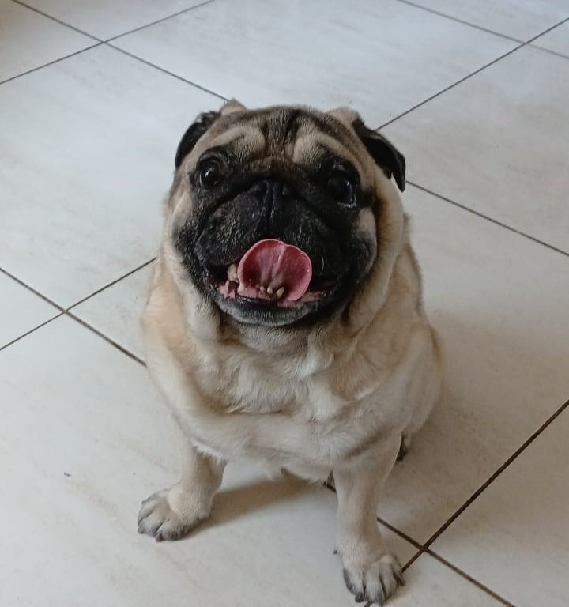
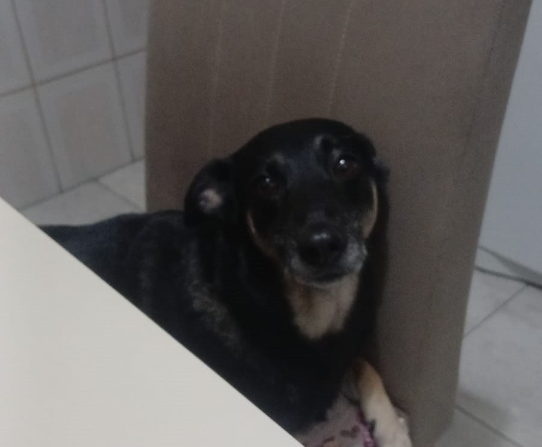

Ozzy
Raça: Pug
Cor: Apricor
Temperamento: Dócil e brincalhão

Meguie
Raça: Sem Raça Definida (SRD)
Cor: Preto e Caramelo
Temperamento: Agitada e dócil
Por que adotar?
Adotar um animal é um ato de amor e responsabilidade. Ao escolher a adoção, você dá uma segunda chance a um animal que muitas vezes passou por abandono, além de ajudar a reduzir o número de animais nas ruas.
Lembre-se: vacinar e castrar são provas de cuidado que garantem saúde e longevidade para o seu companheiro.